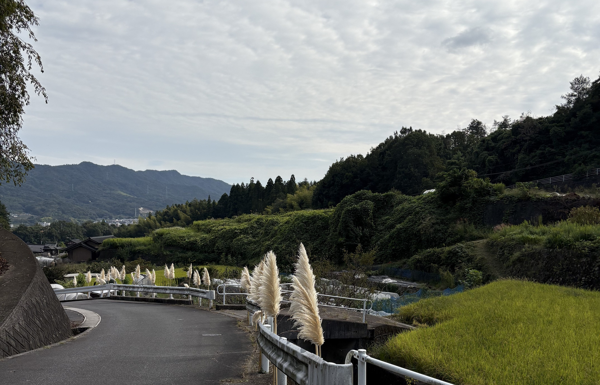
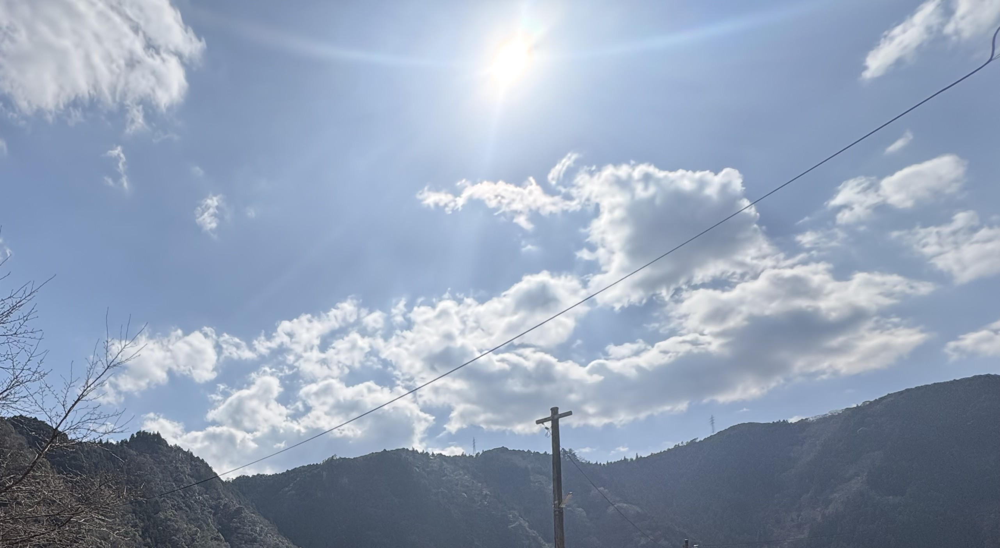

- トップ >
- 季節の空
季節の空
空は季節によっていろんな表情を見せてくれます。それを皆様にもおすそわけ
秋の空

秋のとある日に帰っていたら季節を感じられたので撮った一枚。
冬の空
空港での一枚。朝早くからこんなにきれいな空を見られるとは...
春の空

暖かい陽気の中で撮った一枚。
空は季節によっていろんな表情を見せてくれます。それを皆様にもおすそわけ

秋のとある日に帰っていたら季節を感じられたので撮った一枚。
空港での一枚。朝早くからこんなにきれいな空を見られるとは...

暖かい陽気の中で撮った一枚。